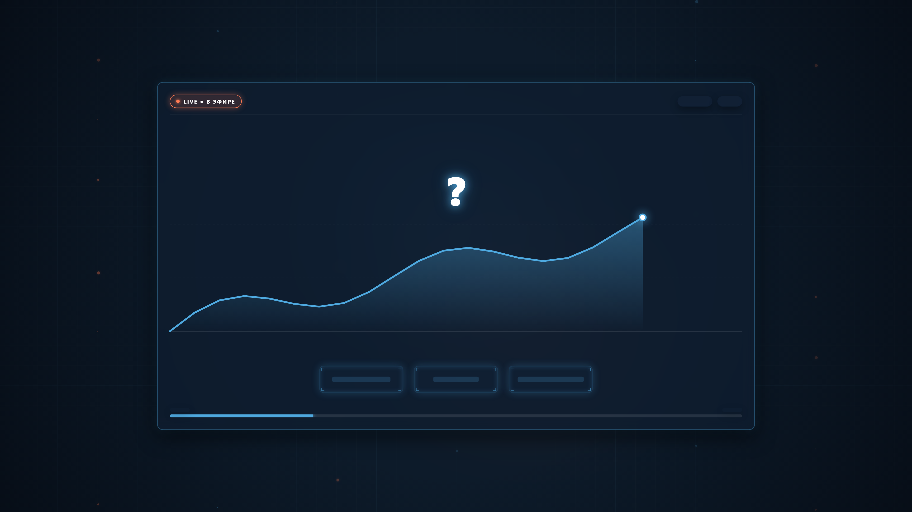

Оценка рейтингов трансляции через Байесовские сети
Обучающий 4K-ролик с чистой векторной инфографикой, математическими кривыми Гаусса и полным отсутствием текстовых галлюцинаций.

Сцена 1: Заставка — трансляция идет в прямом эфире
Скачать этот кадр (4K)
Темная аппаратная, большой экран со светящимся бейджем «LIVE ● В ЭФИРЕ». Заполняющаяся шкала времени, растущая кривая вовлеченности и счетчики в виде элегантных заполнителей.
Фоновый эмбиент-саундтрек (432 Гц)
Низкая громкость (25%), мягкая текстура, без резких битов и перкуссии
4K Галерея всех 8 сцен
Каждая сцена отрендерена в разрешении 3840×2160 с соблюдением правил ТЗ
Центр загрузки материалов
Все файлы проекта оптимизированы для использования в монтажных программах
Пакет 4K кадров
Все 8 сцен в ультра-высоком разрешении PNG без сжатия (3840×2160).
Саундтрек (MP3)
5-минутная эмбиентная звуковая текстура (432 Гц, 192 kbps).
Исходный код проекта
Полный исходный код на React, TypeScript и Remotion с математическими формулами.